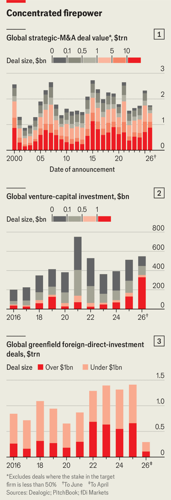
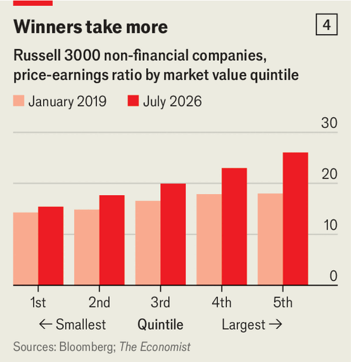

Jul 09, 2026 06:35 AM
Nowadays it is easy to get desensitised to big numbers. Every week stonking deals are announced. Only four days after SpaceX, Elon Musk’s rocket-maker, raised $86bn in the largest ever public listing on June 12th, it said it would buy Cursor, an artificial-intelligence coding startup, for $60bn. The same day DeepSeek, a Chinese AI lab, said it had raised $7bn in the fourth-biggest venture-capital (VC) round ever in the country.
So far this year mega-mergers worth over $10bn have accounted for 48% of total deal value, the highest level on record, according to Dealogic, a data provider (see chart 1). Bets on startups are also concentrating: investment rounds larger than $1bn have accounted for 61% of total VC funding this year, with four-fifths of those rounds involving a corporate investor, according to PitchBook, another data provider (see chart 2).
The trend towards supersize capital flows is visible everywhere you look. Greenfield foreign direct investment (FDI) projects worth over $1bn have made up 42% of the total since the start of 2024, up from 28% from 2016-18, reckons fDi Markets, which tracks projects (see chart 3).
Much of this activity centres on America. Last year the country was the largest destination and source of greenfield FDI projects worth over $1bn. It is also home to 14 of the 15 startups that have received the biggest cheques since the start of 2024. For the 71 mega-mergers since the start of 2025, 44 of the buyers come from America.

But the pattern has also spread to other regions. Last year Taiwan was the second-biggest source of jumbo FDI deals, followed by the UAE and China. Large VC deals are being struck outside America too. DayOne, a Singapore-based data-centre operator, raised $4.5bn in June; Nscale, a British rival, received $2bn in March.
Big transactions come and go in waves. Yet it is rare for these cycles to be so synchronised, and so dependent on a small number of giant firms. That brings dangers.
The trend towards supersize investments is the result of a combination of various undercurrents in global business. First is the availability of capital, despite interest rates having risen from unusually low levels. The cash holdings of companies in America’s S&P 500 index have reached $2.2trn. These firms are also earning more than ever. In America corporate profits are near an all-time high when compared with GDP. That, in turn, has helped push market values to record levels, which gives firms yet more scope to perform takeovers and raise additional debt or equity. On June 1st Alphabet said it would sell $80bn-worth of stock—a rounding error for a company whose market value has soared to $4.4trn.
Much of this cash is being used to fund the AI boom—the second factor behind the trend. Five hyperscalers—Alphabet, Amazon, Meta, Microsoft and Oracle—are expected to shell out perhaps $800bn in capital expenditure this year as they race to erect data centres around the world. At the same time, they are among the biggest financial backers of AI startups. The AI boom has also encouraged a number of big corporate tie-ups, including the merger of Dominion and NextEra, a pair of American power utilities, and the acquisition of CyberArk, a cyber-security company, by Palo Alto Networks, the market leader.
The third factor behind the wave of giant capital flows is politics. In America, the current administration has proved far more relaxed than its predecessor about big mergers. The European Union, fearing that its corporate champions will be left behind, has also recently revised its merger guidelines to make tie-ups easier.
Meanwhile, protectionist governments are pressing companies to reshore manufacturing with tariffs and subsidies. As a result, many big firms are spending huge sums on additional facilities overseas, such as the chip plants in Arizona constructed by TSMC, a Taiwanese semiconductor giant, or the new car factory in Hungary for BYD, a Chinese electric-vehicle colossus.
Technological change and political meddling have resulted in a more uncertain business environment, and bosses are increasingly concluding that greater scale will offer greater safety—a fourth factor behind the investment frenzy. “In a lot of boardrooms I have heard that it is better to be bigger,” says Jake Henry of McKinsey, a consultancy. Investors appear to agree. The Economist looked at non-financial American firms in the Russell 3000 index and split them into quintiles by market value. In 2019 the median price-to-earnings ratio (a measure of how highly investors value a company’s profits) for the largest quintile was 18, compared with 14 for the lowest. Today those figures are 26 and 15, suggesting that the market is valuing the profits of big firms more richly than in the past (see chart 4). The overall result is unchanged when technology firms are excluded.
Companies’ race to scale also poses risks, however. Academics reckon that the chance of a big merger paying off is no different from that of a smaller one (that is, roughly 50-50). Yet the consequences can be catastrophic when things go wrong. Bain, another consultancy, calculates that in almost half of mega-mergers last year the target’s value was over 50% of the buyer’s market capitalisation. Vast amounts of debt are often required.

It is not only mega-mergers that are a cause for concern. Until recently the huge data-centre outlays by America’s hyperscalers were mostly paid for with cash generated by their other businesses. Now they are borrowing heavily, causing a surge in the ratio of their debt to their annual free cashflow. Amazon’s ratio has fallen from below that of the S&P 500 average in 2019 to more than four times the average today.
All this has ramifications for the wider economy. The top decile of listed firms by value now account for over three-quarters of total market capitalisation in America, the highest share in a century, according to Deutsche Bank. An increasingly top-heavy structure means that the failure of just one debt-laden corporate giant could cause significant disruption to financial markets.
Growing corporate concentration may also prove malign in other ways. Consumers, employees and small suppliers could be squeezed and governments unduly swayed by the many lobbyists employed by corporate colossi. That could further fuel the rise of populists on both sides of the political spectrum. According to Gallup, a pollster, the share of Americans who say they trust big business has fallen roughly by half since 2000, to 15%. Scale may confer many advantages, but public adoration will not be one of them. ■
To track the trends shaping commerce, industry and technology, sign up to “The Bottom Line”, our weekly subscriber-only newsletter on global business.